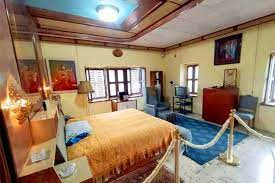
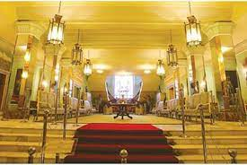
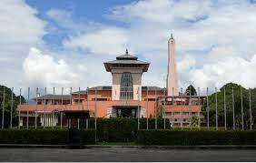
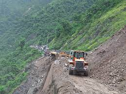
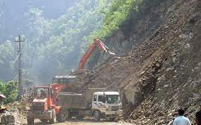
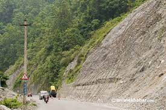

“A platform where you find your digitalized guide.”
Dark Tourism
Narayanhiti Palace



The Narayanhiti Palace Museum (Nepali: नारायणहिटी दरवार) is a public museum in Kathmandu, Nepal located east of the Kaiser Mahal and next to Thamel. Following the 2006 revolution, the former Narayanhiti Palace (or Narayanhiti Durbar) complex was converted into the museum in 2008.Before the revolution, the palace was the residence and principal workplace of the monarch of the Kingdom of Nepal, and hosted occasions of state. The existing palace complex was built by King Mahendra in 1963, and incorporates an impressive array of courtyards, gardens and buildings. In 1972, Mahendra designated the palace to be the king's office and the government of Nepal's property. He claimed the property was his paternal grandmother, Queen Divyeshwari's, dowry. On June 1, 2001, Crown Prince Dipendra murdered several members of the royal family in the palace before committing suicide. Among the dead were King Birendra and Queen Aishwarya.
Time to visit:
Palace is open for everyone at any season.The palace is open from 11 a.m. till 4 p.m. It is closed on Tuesday and Wednesday. 2. The best times to visit are in the morning and afternoon.
Location:
The Narayanhiti Palace Museum is a public museum in Kathmandu, Nepal, situated east of the Kaiser Mahal and adjacent to Thamel.
Mugling- Narayanghat – Never stop for hitchhikers



Consider visiting a spooky location while driving. The road between Mugling and Narayanghat is one of the most scenic routes to travel. However, it has evolved into a terrifying nightmare. Yes, the trip will be entertaining, but if you like to drive at night, you are in for a treat. Locals will ask you to avoid walking on the road at night. What happens? You might witness spirits asking for a lift, unexpected figures falling in front of your vehicle, and other paranormal events. Today, the road is very busy in the mornings and evenings, and you will not feel the adrenaline rush. The route contains forest on both sides. Police have verified that they have recovered several dead from the woodland regions, and the majority of the cases are still pending. The spirits discovered on the highway were thought to be tortured souls, whose corpses may be found abandoned in the woods.